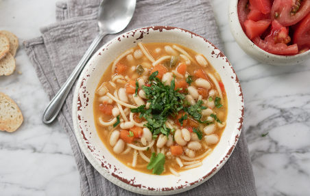

Un clásico de la cocina chilena: los porotos con riendas. Reconfortantes, nutritivos
y llenos de sabor. Perfectos para compartir en familia durante los días fríos.
Ingredientes
- 500 g de porotos burros (remojados la noche anterior)
- 200 g de zapallo en cubos
- 1 cebolla picada en cubos
- 2 dientes de ajo picados
- 1 zanahoria en rodajas
- 200 g de tallarines
- 1 longaniza o chorizo en rodajas
- 1 cda de ají de color
- Sal y pimienta a gusto
Preparación
- En una olla grande, sofríe la cebolla, ajo, zanahoria y la longaniza con un poco de aceite.
- Agrega los porotos remojados, cúbrelos con agua y cocina hasta que estén tiernos.
- Incorpora el zapallo, el ají de color y condimenta con sal y pimienta.
- Cuando los porotos estén cocidos, añade los tallarines y cocina hasta que estén al dente.
- Sirve caliente, acompañado de un buen pebre.